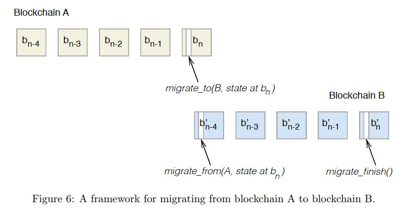
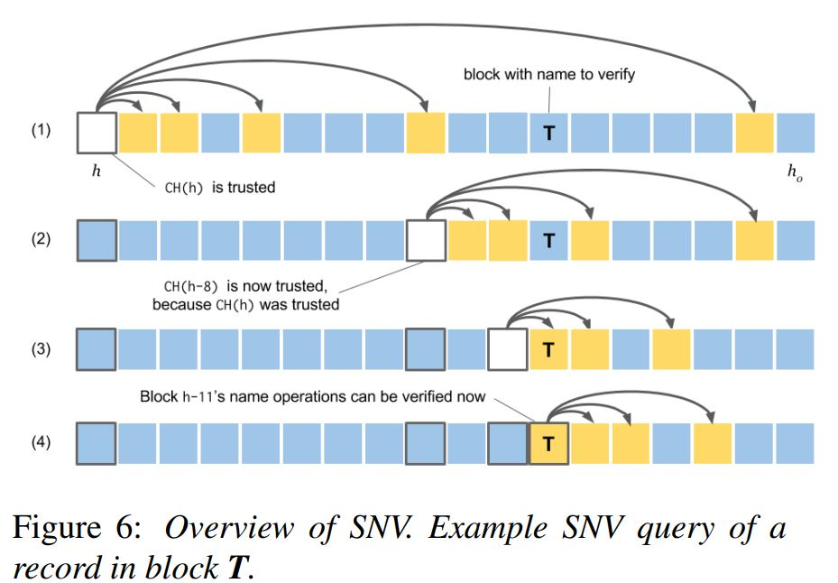

blockstack虚拟链
上周理解错了虚拟链的概念，导致逻辑串不起来。虚拟链其实是能够直接根据底层区块链的内容整理出来的，存储内容的格式与底层区块链是一样的。因此底层区块链不知晓虚拟链，但虚拟链能知晓底层的区块链，它主要做的是整理自己的账本，然后驱动状态转移。也就是说，底层的区块链是做数据认证用的，真正的逻辑层面内容是由虚拟链整理。
[1] Blockstack: A Global Naming and Storage System Secured by Blockchains(2016)
[2] Blockstack: A New Decentralized Internet(2017)
[3] Extending Existing Blockchains with Virtualchain(2016)
虚拟链到底有没有实现多个区块链同时读取?
没有实现多个区块链的读取，只实现了区块链间的迁移。它为的是当底层区块链崩掉的时候，能将数据迁移到别的区块链上面。

但是blockstack虚拟链迁移的方式比较笨拙，每条区块链最早的一份交易是迁入交易，最晚的一份交易是迁出交易。迁出交易记录了迁移到了什么新区块链上；在另一个区块链上记录了迁入交易和迁入完成交易。
迁入交易记录了从哪个区块链的哪份交易来；接下来有一个迁移期，此时迁移者会将旧的数据迁移进新区块链，迁移完成后发布一份迁移完成(migrate finish)的交易，表示完成迁移，迁移完成时，需要验证整个状态的哈希值相一致。这里所有的操作都需要存在一个迁移者，而相关交易的验证也与迁移者相关。所以，它其实并没有实现去中心化的区块链迁移。
虚拟链和底层链的区块生成和上链过程如何?
不存在的，虚拟链的交易可直接由底层区块链打包。上层的数据都在Atlas上保存。
Simple Name Verifcation到底是什么?
这个是blockstack用于轻量化节点的一种方式。如果我们想要在比特币上使用SPV，那我们也需要同步所有的交易，然后把这些交易验证后删除而已，保留区块头。在blockstack的轻量节点里，但并不需要同步所有的交易，如果高度为h，只要相等，就可以说明整条链的状态是一致的。
在验证的时候，比如现在交易的高度是h，由于其区块哈希的计算是比较独特的：

因此对于每个区块，如果存在一个可信任的高度(如果不存在则)，则可以通过倍增算法只用验证个区块就可以检验该区块上的名字。因此同步的时间可以由原来的3-4天减少至1-2小时。
DHT和atlas
其实在2016年的版本，它确实是使用DHT来存储数据的，但是由于一些数据中心不太稳定，使得DHT的效果比较差。因此在之后的版本(2017)，blockstack把它换成了atlas网络，它也是一个对等网络，只不过它存储的是o(n)级别的数据。由于限制了每个名字的数据最多只能有4KB，因此存储现在70000个名字也只不过用了300MB的空间。
每一个名字都被分派到了o(n)个atlas节点上，而每个节点都随机与K个节点连接作为相邻节点。该节点会定时向陌生节点查询这k个节点内都不存在的名字。最终，每个节点与其相邻的K个节点共同组成一份完整的域名数据。